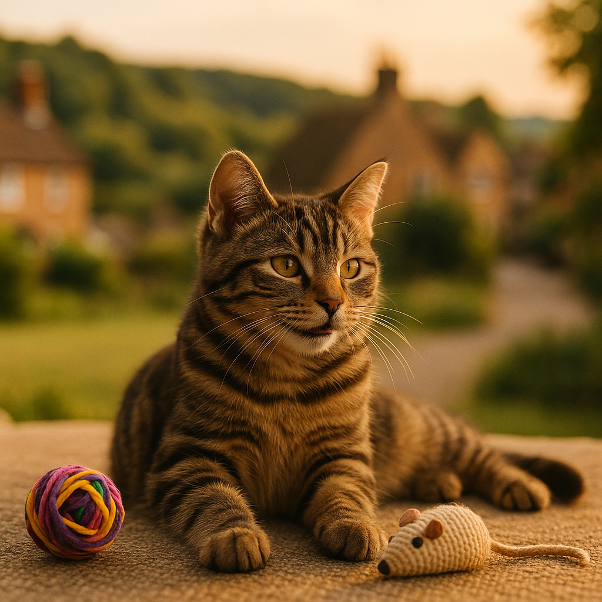
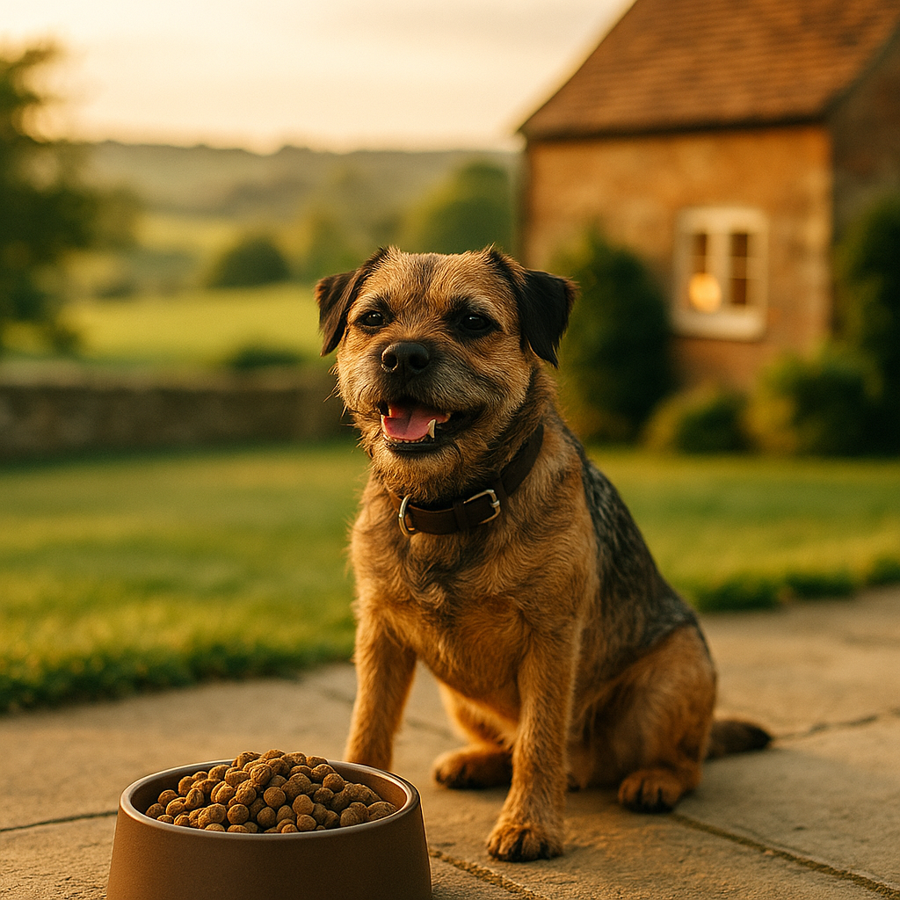

Latest Guides

Best dog and cat advent calendars UK 2026: what's inside, safety and value
Find the best pet advent calendars for dogs and cats in the UK. We review what's inside, safety standards and whether they're worth buying.
Cat Clicker Training UK: A Beginner's Step-by-Step Guide
Clicker training isn't just for dogs. Discover how to teach your cat new tricks using positive reinforcement, step by step.

Best Salmon Oil for Cats UK 2026: Benefits, Dosage and Top Picks
Salmon oil can transform your cat's coat and support joint health. We round up the best UK options and explain exactly how much to give.

Best Kitten Toys UK 2026: Keep Your Kitten Entertained and Healthy
From feather wands to puzzle feeders, these are the best kitten toys available in the UK to keep your new arrival active and happy.
Best Food for Maine Coon Cats UK 2026: Nutrition Guide and Top Picks
Maine Coons have unique dietary needs thanks to their size and coat. Here are the best foods to keep them healthy, available in the UK.

Best Dog Food UK 2026: Top Picks for Every Budget and Breed
We compare the best dog food brands in the UK for 2026, covering nutrition, ingredients and value across dry, wet and fresh options.

Best Automatic Cat Feeder UK 2026: Timed and Smart Feeders Compared
From simple timed dispensers to wi-fi smart feeders, we compare the best automatic cat feeders available in the UK right now.

Hypoallergenic Cat Food UK 2026: Best Picks for Sensitive and Allergic Cats
Scratching, vomiting or loose stools? A hypoallergenic diet could help. We compare the best options for UK cats.
French Bulldog Health Testing UK 2026: What to Check Before You Buy
Before you bring home a French Bulldog, here is every health test that matters and exactly what the results should show.

Food to Help a Cat Gain Weight UK 2026: Vet-Backed Tips for Underweight Cats
An underweight cat needs careful feeding, not just more food. Here is expert-backed advice on safe weight gain for UK cats.
Cat Behaviour Problems UK: Why Your Cat Does That and How to Help
From spraying to midnight zoomies, this plain-English guide explains the most common cat behaviour problems and what you can actually do about them.
Best Wet Food for Persian Cats UK 2026: Vet-Reviewed Picks for a Fussy Breed
Persian cats are notoriously fussy eaters with special nutritional needs. Here are the best wet food picks for 2026.